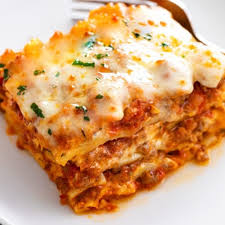

HOW TO MAKE LASANGA (FOR GARFIELDDDDDDDDD)
How to spell lasanga
Lasagna
MAKING THE LASANGA LASAGNA
PART 1 : INGREDIENTS FOR THE SAGNA
First, acquire money to buy the ingredients for lasagna. Then,
acquire a supermarket to buy said ingredients with said money.
Afterwards, have a means of transportation to take said ingredients
from market of choice to living dwelling of choice to prepare
ingredients to summon lasagna.
Cheese Filling
-
15 oz. ricotta cheese, 2 cups
-
1 large egg
-
2 cups mozzarella cheese
-
2 teaspoons Italian seasoning
-
½ teaspoon salt
-
¼ tsp pepper
-
¾ cup Parmesan cheese, freshly grated
Meat Sauce
-
1 tablespoon olive oil
-
1 yellow onion, finely diced
-
¾ lb. ground beef
-
¾ lb. ground Italian sausage
-
3 cloves garlic, minced
-
½ cup chicken broth
-
40 oz. marinara sauce, see notes
-
1 tablespoon tomato paste
-
1 teaspoon hot sauce
-
1 teaspoon Worcestershire sauce
Lasag Pasta and Cheesssseee
-
12 lasagna noodles, plus extra in case of breakage
-
2.5 cups mozzarella cheese
Materials
-
1 9 x 13-inch casserole dish
12 lasagna noodles, plus extra in case of breakage
ASSEMBLING INGREDIENTS FOR LASAG-
Prepping
-
Combine the cheese filling ingredients
in a medium bowl and set aside. Measure out remaining ingredients.
Beating Making the Meat Sauce
-
Heat olive oil over medium heat and add the diced onions. Let them soften for 10 minutes. (This
allows them to release a little sugar which is a nice offset to the acidity of the tomatoes.)
-
Add the ground beef and sausage and increase heat to medium-high.
Use a spatula to break up the meat so that it’s very fine and crumbled.
Cook for 8-10 minutes, or until cooked through. Add garlic during the last minute.
Drain excess grease.
-
Add the chicken broth and use a silicone spatula to “clean” the bottom and sides of the pot.
Add the marinara sauce, tomato paste, hot sauce, and Worcestershire sauce. Bring to a boil,
then reduce to a simmer. Cover partially and let the sauce simmer gently while you boil the
pasta noodles.
Preheat the Oven and Cook Dem' Noods
-
Preheat oven to 375°.
-
Begin boiling a large pot of salted pasta water for the lasagna noodles. Once a rapid boil is
reached, cook the noodles to al dente according to package instructions. (Set a timer to ensure
you don’t overcook them.) Gently stir with a wooden spoon throughout cooking to prevent the noodles
from sticking. Drain and rinse with cold water until noodles are completely cool.
-
Lay the cooled noodles flat on wax or parchment paper while you begin assembling the lasagna.
Assemble
-
Spread 1 heaping cup of meat sauce on the bottom of a 9 x 13-inch casserole dish. Next, add 4
lasagna noodles, overlapping them if needed.
-
Spread 1/3 of the ricotta cheese mixture over the noodles, followed by about 1 ½ cups of meat sauce.
-
Top with 4 more lasagna noodles, 1/3 of the ricotta cheese mixture, 1 ½ cups meat sauce.
-
Finish with 4 more lasagna noodles, the rest of the ricotta mixture, and the rest of the meat sauce.
-
Top with 2 ½ cups of Mozzarella cheese.
-
Spray foil with nonstick cooking spray and place it spray-side-down on top of the baking dish to prevent
the cheese from sticking to it.
420 375 Bake It
-
Bake for 35 minutes. Remove cover and bake for 10 more minutes.
-
Remove and garnish with fresh parsley. Let it sit for 15 minutes
prior to serving to allow the layers to set. Serve with garlic bread with cheese.
CONGRATS! LASANGNA LASAGNA!
